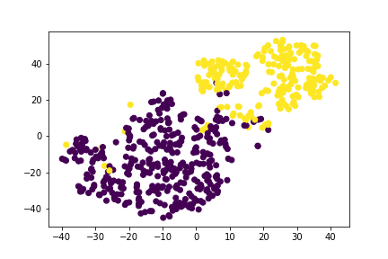

Unsupervised Learning
Our Unsupervised Machine Learning was a combination of PCA/TSNE/K-Means that tried to predict whether someone had cancer or not.
The Unsupervised Model came out with the following results
The K-Means after having its dimensionality reduced, first to 15 then to 3, found that we did have 3 classes.
Through this we explained that 98.78% of the vairance was explained with 15 variables
We believe that two of the classes were the benign and malignant tumors and that the third class was the heavily overlapped categories that it couldn't determine.
We then tried our hand at letting an unsupervised model see what it can find. We chose K-means since we saw from earlier that it looked like clustering was certainly happening and not all the features were necessarily helping. For the dimension reduction via pca we chose 15 to correspond to the number of significant looking features. In doing this we saw from the plots, that the results looked very similar to the actual data when done with t-sne. We then had k-means find the clusters. We know that there should be only two clusters since it is a binary classification, but let it look anyway. K-means preferred to consider three clusters, which was interesting. One thing that comes to mind is that it sees the data that is clearly separated but then the data that sits in the intersection as a separate cluster. In thinking that way it makes sense. Our pca reduced variables did account for 99% of the explained variance, which was nice.
We looked at doing both 2 and 3 clusters. Also we ran it again with the balanced dataset and 3 clusters to see how it split it up. We did not know how best to test the performance though since our test set only has the binary results. We think if we had more time we could build a new target dataset with 3 values, but that is for another time. In the real world the third cluster of data could represent the individuals for which it may be best to do further testing before moving forward.
